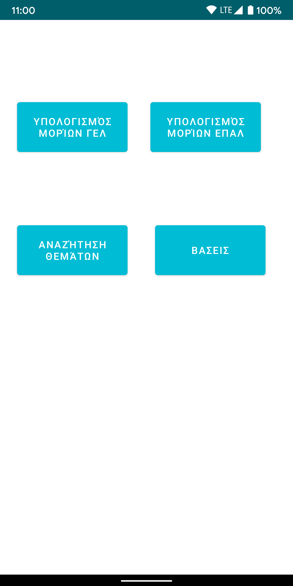
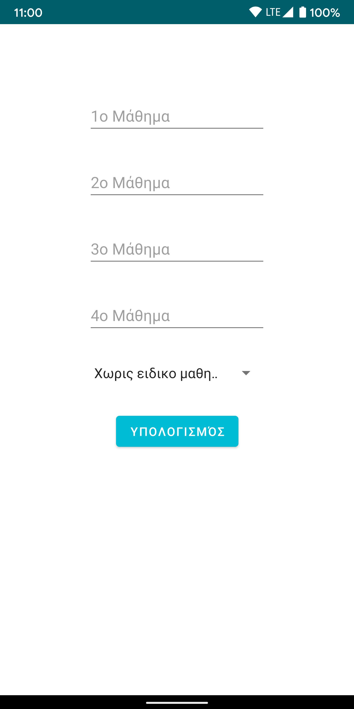
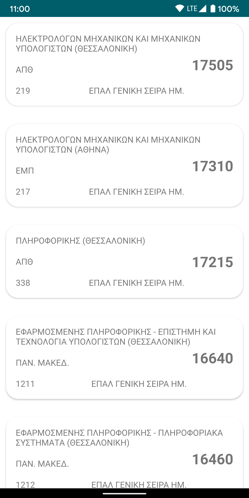
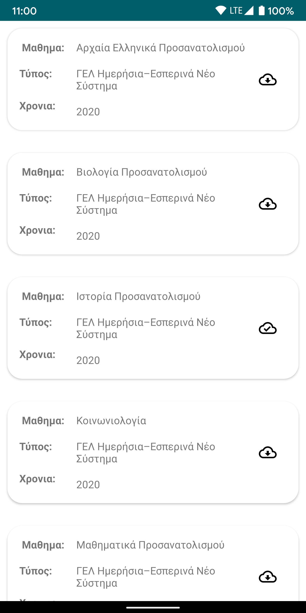

Μόρια Πανελλαδικών
Μια εφαρμογή για να υπολογίζουν οι υποψήφιοι πανελλαδικών εξετάσεων τα μόρια τους, να βλέπουν βάσεις και θέματα παλιών εξετάσεων. Η εφαρμογή είναι γραμμένη σε γλώσσα Java και Kotlin και XML για τα layout τις, επίσης χρησιμοποιεί Firebase για βάση δεδομένον και ταυτοποίηση, προκειμένου το περιεχόμενο να είναι δυναμικό και ανεξάρτητο απο την εφαρμογή
   